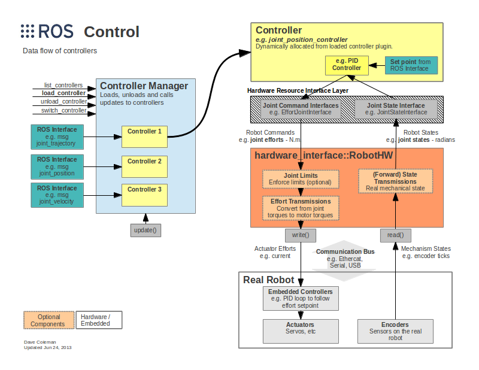
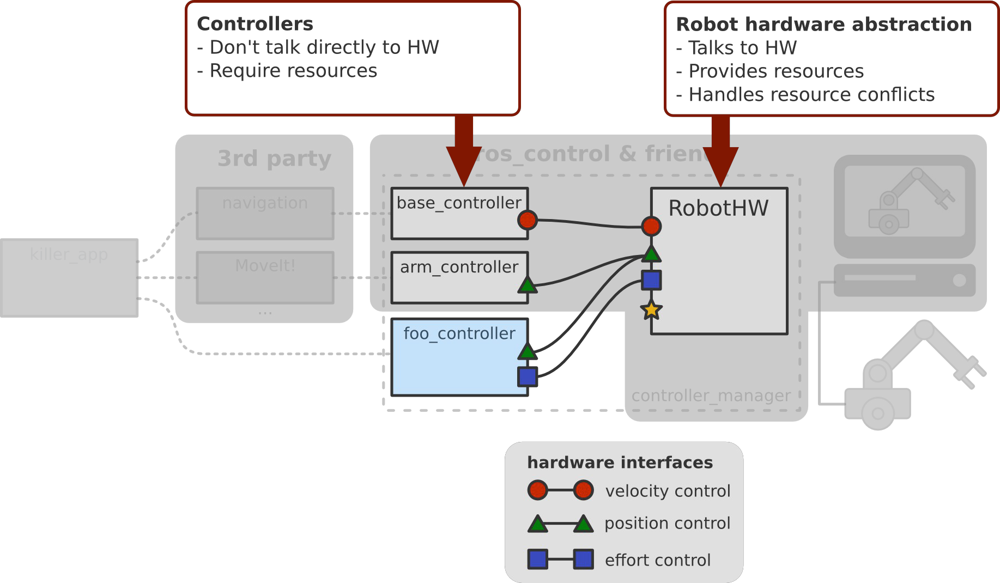
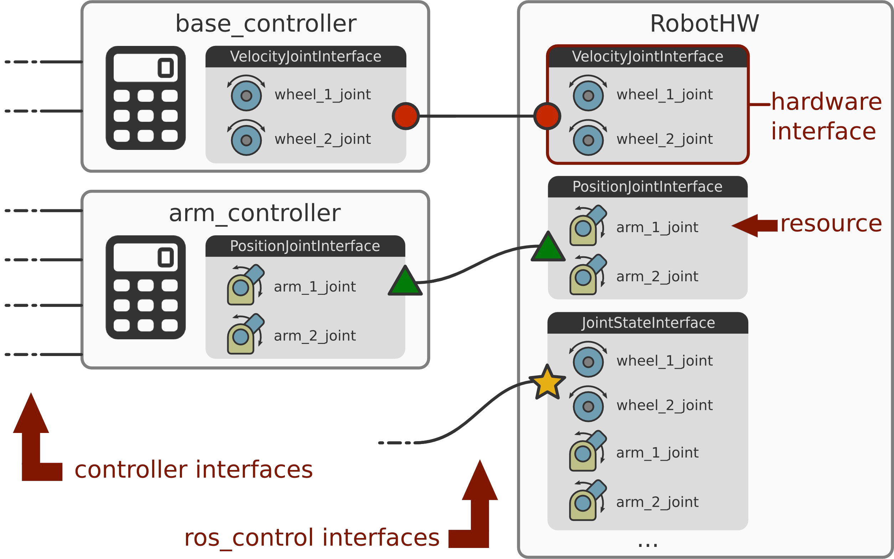
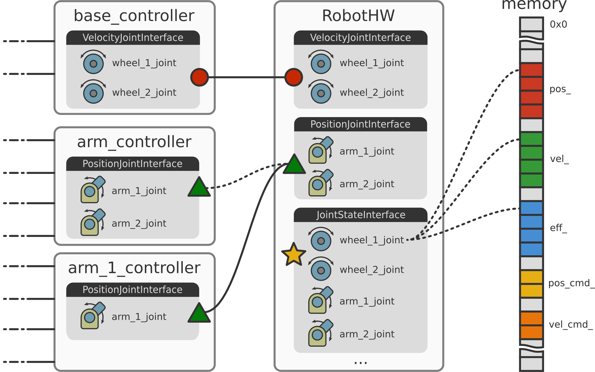

He Mingshan's
HomePage


ROS Control
1. Overview
The row_control packages takes as input the joint state data from your robot's actuator's encoders and an input set point. It uses a generic control loop feedback mechanism, typically a PID controller, to control the output, typically effort, sent to your actuators.

row_control helps you writing controllers including real-time constraints, transmissions and joint limits. It provides tools for modeling the robot in software, represented by the robot hardware interface (hardware_interface::RobotHW), and comes with ready to use out of the box controllers， thanks to a common interface (controller_interface::ControllerBase) for different applications which then talk to third-party tools. The important aspects to highlight is that the hardware access to the robot is decoupled, so you don't expose how you talk to your robot. This means that controllers and your robot hardware structure are decoupled so you can develop them independently and in isolation which enables you to share and mix and match controllers.
When you want to write your robot backend, there's a possibility to leverage an out of the box simulation backend (gazebo_ros_control plugin). After you've tested your robot in simulation, and want to work on the real robot hardware, you will want to write your custom hardware backend for your robot.
There is already a set of existing controllers (ros_controllers meta package) that are robot agnostic, which should hopefully enable you to leverage some of those. However, if your application requires it, then there are tools (controller_interface) that help you also implement custom controllers. ros control also provides the controller manager for controlling the life cycle of your controllers.
Another important aspects is that row_control is real-time ready in the sense that if your application has real-time constraints then you can use row_control with it.
In summary, the goals of the row_control are to
- lower the entry barrier for exposing hardware to ROS.
- promote the reuse of control code in the same spirit that ROS has done for non-control code, at least non-real-time control code.
- provide a set of ready-to-use tools.
- have a real-time ready implementation.
2. Constituent
The row_control project consists of a github organization that's called ros controls. You can find messages, information and action definitions, tools in there that help you writing real-time code (realtime_tools) in the context of control, hardware interfaces (hardware_interface) and the transmission_interface package to describe your robot and the controller_manager. The core framework is found in the ros_control package which is compatible with ros_controllers that provides a set of robot agnostic controllers.
The ros_control meta package is composed of the following individual packages:
- control_toolbox: This package contains common modules (PID and Sine) that can be used by all controllers.
- controller_interface: This package contains the interface base class for existing controllers and to develop new ones that will work with the ros control framework.
- controller_manager: This package provides the infrastructure to load, unload, start, and stop controllers.
- hardware_interface: This contains the base class for the hardware interfaces.
- transmission_interface: This package contains the interface classes to model transmissions.
3. Details
3.1 Overview
ros control is split into two parts. First there is the robot hardware abstraction, which is used to communicate with the hardware. It provides resources like joints and it also handles resource conflict. On the other hand, we have controllers. They communicate with the hardware through the hardware interface and they require resources that are provided by the hardware abstraction.

3.2 Hardware Abstraction and Controllers
This part will describe the hardware abstraction and the communication between and with ros_controllers.

The hardware interface is a software representation of the robot and its abstract hardware. In ros control speak, we have the notion of resources, which are actuators, joints and sensors. Some resources are read-only, like joint_states, IMU, force-torque sensors, and so on, and some are read and write compatible, such as position, velocity, and effort joints. A bunch of hardware interfaces, where one is just a set of similar resources, represent a robot.
The robot hardware, represented in software, and the controllers are connected via ros control's interfaces, not to be confused with typical ROS interfaces like topics, actions or services. This means, we are just passing pointers around which is real-time safe. The interfaces of the robot hardware are used by controllers to connect and communicate with the hardware. At the leftmost part of the image, we see that controllers have their interfaces, which are typically ROS interfaces that are custom so your controller can expose whatever it wants.
3.3 Exclusive Resource Ownwership
It can have multiple controllers accessing the same interface. By default thers's a policy of exclusive resource ownership. In this case, it can either have one or the other but not both controllers running at the same time, which is enforced by ros control. If it want other policies, you can implement them as well.
3.4 Memory Layout
The following image depicts the memory layout of your raw data and you can see the memory regions where you actually read and write from and to hardware.

A resource is nothing else than pointers to the raw data that adds some semantics to the data such as describing that it is a position or velocity, the name of the joint and that it belongs for example to a joint state interface.
As you see in the memory layout image above, joint state interfaces are used for reding joint state. If you have a resource that can revceive commands and at the same time provide feedback you can use the joint command interface. This interface is the base interface for other joint interfaces for position, velocity and effort. These interfaces provide semantic meaning which allow you to read the joint state and send semantically meaningful commands. The following is a simple code example.
xxxxxxxxxx
class MyRobot : public hardware_interface::RobotHW{public: MyRobot(); // Setup robot MyRobot(ros::NodeHandle &nh, urdf::Model *urdf_model = NULL); // Talk to HW void read(); void write(); // Requirement only if needed ... virtual bool checkForConflict(...) const;} To implement your custom robot hardware interface you inherit from a class called hardware_interface::RobotHW that is part of ros_control. In the constructor you set up your robot, either implemented in code or using a robot description in the form of an urdf model. The later requires that you pass the urdf model to the constructor or load it from the parameter server.
After the robot setup we need to implement the read() and write() methods, which is robot specific and up to you to implement. The read() method is used to populate the raw data with your robot's state and write() is used to send out raw commands via CAN bus, Ethernet, Ethercat, serial port or whatever protocal your robot hardware uses.
In summary, the package called hardware_interface provides all the building blocks for constructing a robot hardware abstraction. It is the software representation of your robot and the idaea is to abstract hardware away wchich is done using resources, interfaces, that are sets of similar resources, and make up a robot, which is a set of interfaces. The hardware interface also handles resource conflicts and by default we have exclusive resource ownership.
3.5 Simulation
To simulate your robot, there is a package called gazebo_ros_control which is located outside the ros control organization repositories in ros-simulation/gazebo_ros_pkgs. It is a Gazebo plugin for ros control. There exists a default plugin, which populates all the joint interfaces from the URDF by parsing transmission specification and optionally joint limits, which will be describe later in the post. If you use the default plugin and want your robot to show up in your Gazebo simulator, the following is all you have to add to your urdf description, apat from the robot's transmissions.
<gazebo> <plugin name="gazebo_ros_control" filename="libgazebo_ros_control.so"> <robotNamespace>/my_robot</robotNamespace> </plugin></gazebo>This makes it simple to test ros control because we don't have to write any robot hardware interface code. Instead, we just need to setup some configuration files.
3.6 Controllers
As mentioned, a controller requires resources in the form of ros control hardware interfaces. Controllers use a plugin interface that implements the controller lifecycle. The lifecycle is a simple state machine with transitions between two states which are "stopped" and "running". A controller has two computation units where one is real-time safe and the other is non real-time.
When you start one controller the following is what gets executed before the controller update:
- Resource conflict handling: by this time we know that resources exists but we check if the resource is already in use or available for your controller.
- The next typical policy is to apply what's called semantic zero: After the controller starts, you woluld for example hold the position, set the velocity to zero, activate gravity compensation or something else that makes sense in your use case.
The last real-time safe operation is update() which is a real-time safe computation, if implemented accordingly. This means you have to take care the implementation of update() is actually real-time safe, or if you don't have real-time constrains, that the implementation is deterministic. The update() mehod is executed periodically in the "running" state.
Finally, the last part of computations that exist in controllers are non real-time operations which are executed asynchronously and take place in the callbacks of your controller's ros interface.
In summary, controllers are dynamically loadable plugins that have an interface which defines a very simple state machine. This interface clearly separates the operations that are non real-time safe from those that are required to be real-time safe. Finally, the computation can take place in the controller update, which in this case is both periodic and real-time safe, and we have compution in the ROS API callbacks, which is asynchronous and non real-time safe.
3.7 Control Loop
Typically, you first read the state from the hardware through the hardware interface, then use the controller manager to update hte controllers with the current hardware state, and finally you send the commands from the update step back out to the hardware.
xxxxxxxxxx
int main(int argc, char **argv){ // Setup ros::init(argc, argv, "robot"); Robot::Robot robot; controller_manager::ControllerManager cm(&robot); ros:AsyncSpinner spinner(1); spinner.start(); // Control loop ros::Time prev_time = ros::Time::now(); ros::Rate rate(10.0); // 10 Hz rate while (ros::ok()) { const ros::Time time = ros:Time::now(); const ros::Duration period = time - prev_time; robot.read(); cm.update(time, period); root.write(); rate.sleep(); } return 0;}
As we see in the image above, there are different kinds of callbacks that are serviced by this thread. First, those from the controller manager API and second, there's the ROS API from your controllers which is custom and up to you. And finally there might be other callbacks registered which depends on your setup. It is important to mention, that we have the computations, which are non real-time in a separate thread. Having these non real-time computations separate means that we repect requirements from real-time applications but also deterministic execution.
To deal with concurrency and other things ther's a package named realtime_tools which has tools that are usable from a hard real-time thread. It includes:
- RealtimePublisher: publish to a ROS topic.
- RealtimeBuffer: share resource with non real-time thread.
- RealtimeClock: query estimates of the system clock.
- ...